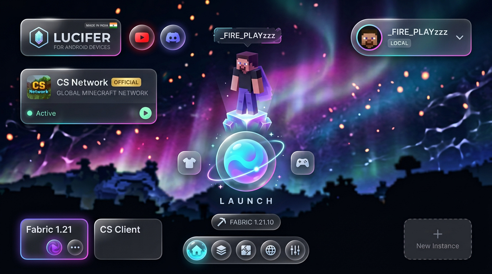
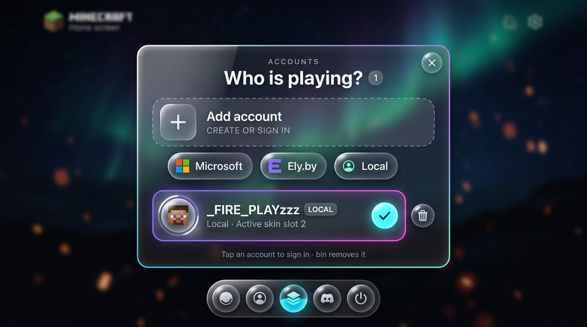
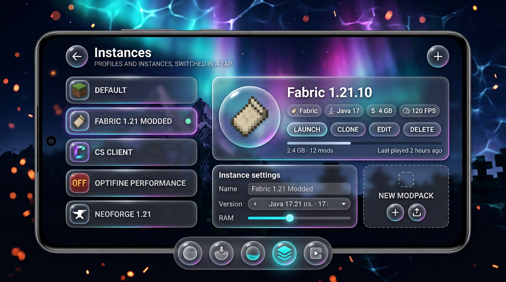
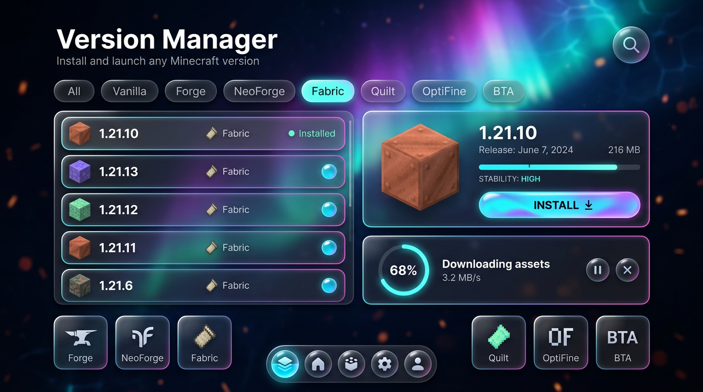
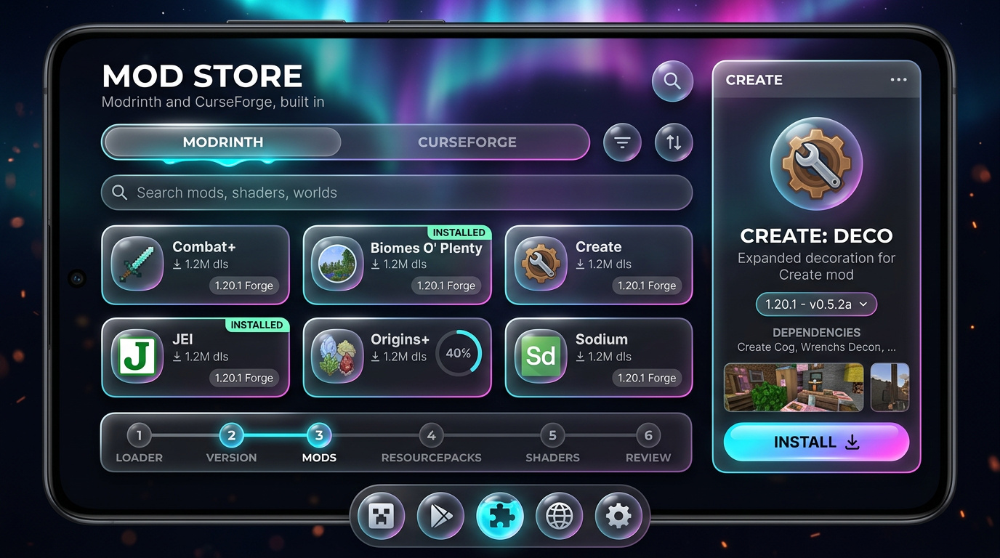
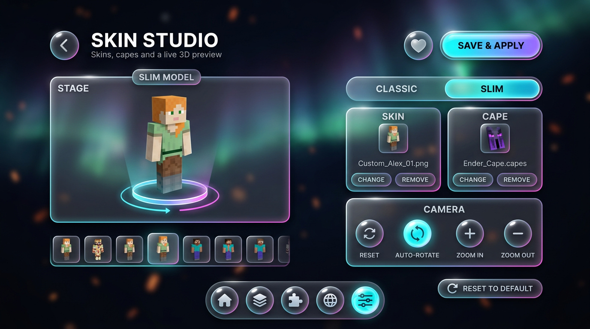
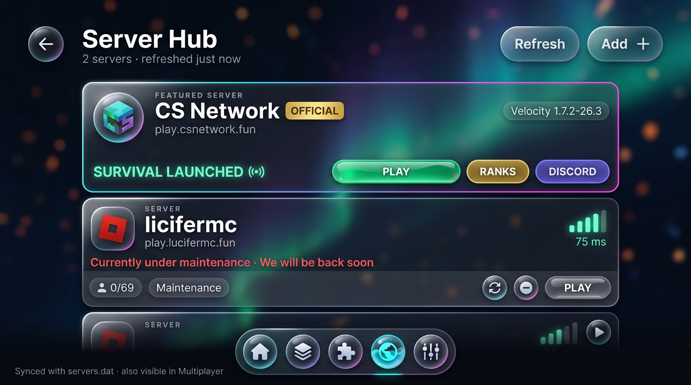
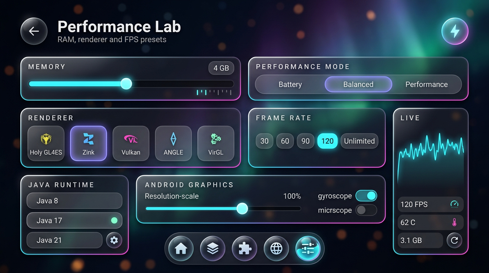
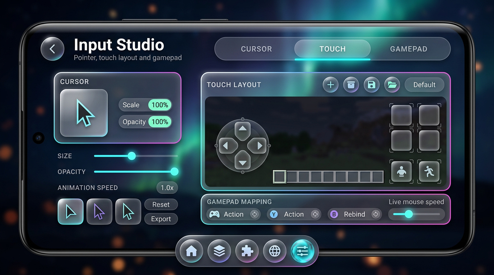
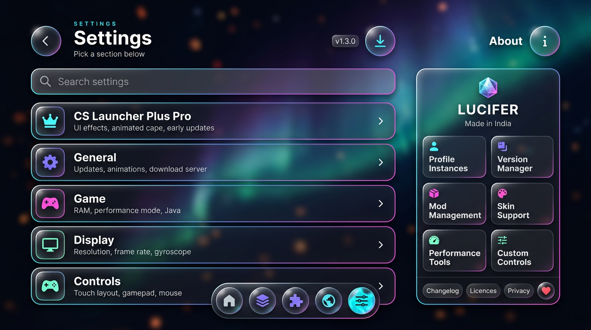

A complete visual rebuild of every tab page in your CS Launcher V2 fork. The old left icon rail is gone, the white pill LAUNCH button is gone, the flat widget cards are gone. Everything now floats as thick frosted glass over a deep-space aurora, with liquid light cores, chromatic edges and a bottom orb dock. No feature was removed — every item that exists today has an exact new home (see the parity table at the end).

LOCAL badge, spinner chevron)
LOCAL chip, "Local · Active skin slot 2"







#06070F + aurora nebula, bokeh embers, caustic haze, blurred voxel horizonRenderEffect.createBlurEffect (API 31+) or a RealtimeBlurView/Haze fallback below that; always pair with a translucent fallback colour so low-end devices still read correctlyFrameLayout + 5 animated orbs replaces the left rail in fragment_home_fastclient.xml| Today (in your fork) | New home in this UI |
|---|---|
| Left icon rail (home, instances, cursor, gamepad, account, settings) | Bottom glass orb dock (Home · Instances · Mod Store · Server Hub · Settings) + account medallion in the top bar; cursor/gamepad live in Input Studio |
| Big white pill LAUNCH button | Circular liquid-core Launch orb with orbiting halo (doubles as download progress) |
| Version spinner + edit-profile button at the bottom | Version pill under the Launch orb; instance cards carry the play / edit actions |
| Accounts dialog — "Who is playing?" | Screen 02 — floating account glass sheet with Microsoft / Ely.by / Local orbs |
| Profile instances, clone / edit / remove, modpack creation, import & export | Screen 03 — Instances & Profiles control room |
| Version Manager + Forge / NeoForge / Fabric / Quilt / OptiFine / BTA installers | Screen 04 — Version Manager with loader tiles |
| Download list / queue | Screen 04 — circular queue ring card |
| Mod store (Modrinth + CurseForge), mod detail, versions, dependencies, mod management | Screen 05 — Mod Store showcase + install slab |
| Modpack builder (loader → version → mods → resourcepacks → shaders → review) | Screen 05 — connected node stepper |
| Skin manager (3D preview, classic/slim, skin & cape, camera, reset) | Screen 06 — Skin Studio with pedestal stage |
| Server hub (CS Network featured, licifermc, add / refresh / remove, servers.dat sync) | Screen 07 — Server Hub glass slabs |
| RAM, performance mode, renderer, frame rate, Java runtime, resolution scale, gyro | Screen 08 — Performance Lab + live telemetry |
| Client features enable flow (with progress) | Screen 08 — lightning orb in the header, progress surface reused |
| Custom controls editor, gamepad mapper, cursor customization | Screen 09 — Input Studio (Cursor · Touch · Gamepad) |
| Settings sections + search + Plus Pro upsell + About / changelog / licences / privacy | Screen 10 — Settings & About two-column layout |
| Wiki/News, Discord, YouTube, share logs, open game directory, run .jar | Header social orbs (YouTube / Discord) and the instance/utility tiles; all keep their existing handlers |